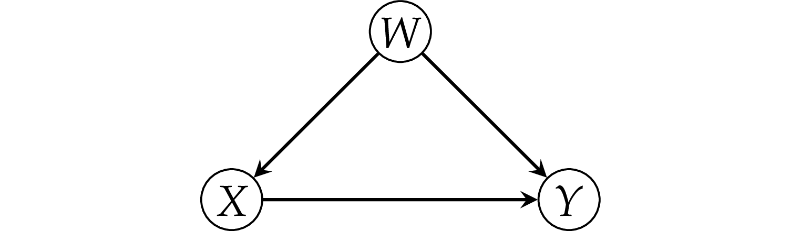
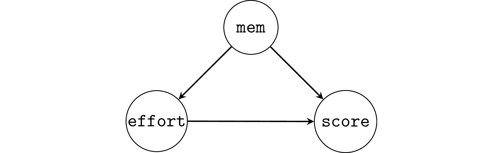
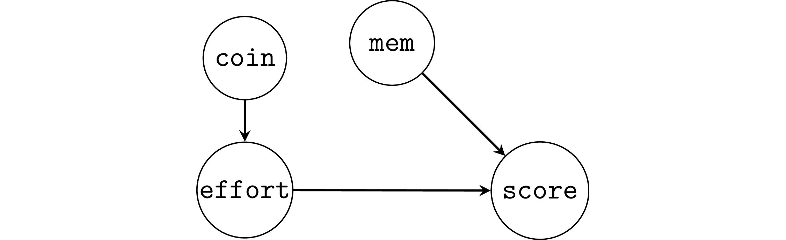
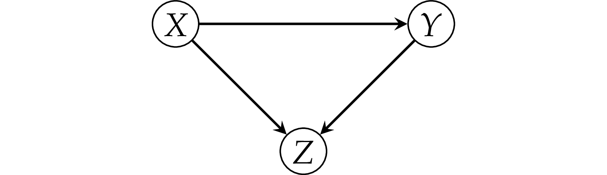
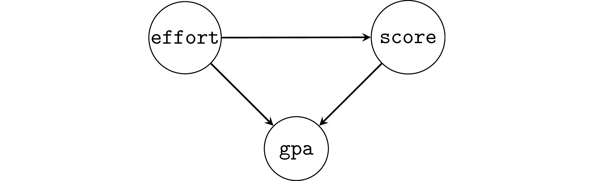
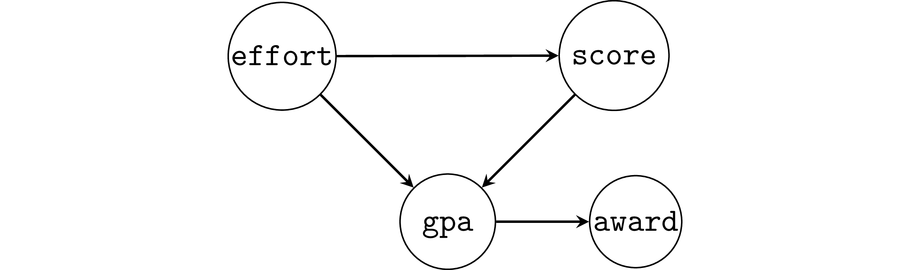

Section 4.5 — Model selection for causal inference#
This notebook contains the code examples from Section 4.5 Model selection for causal inference from the No Bullshit Guide to Statistics.
Notebook setup#
# Ensure required Python modules are installed
%pip install --quiet numpy scipy seaborn pandas statsmodels ministats
[notice] A new release of pip is available: 26.0 -> 26.0.1
[notice] To update, run: pip install --upgrade pip
Note: you may need to restart the kernel to use updated packages.
# Load Python modules
import matplotlib.pyplot as plt
import numpy as np
import pandas as pd
import seaborn as sns
# Figures setup
plt.clf() # needed otherwise `sns.set_theme` doesn't work
sns.set_theme(
context="paper",
style="whitegrid",
palette="colorblind",
rc={"font.family": "serif",
"font.serif": ["Palatino", "DejaVu Serif", "serif"],
"figure.figsize": (7,4)},
)
%config InlineBackend.figure_format = "retina"
<Figure size 640x480 with 0 Axes>
# Simple float __repr__
if int(np.__version__.split(".")[0]) >= 2:
np.set_printoptions(legacy='1.25')
# Download datasets/ directory if necessary
from ministats import ensure_datasets
ensure_datasets()
datasets/ directory already exists.
Definitions#
Causal graphs#
Simple graphs#
More complicated graphs#
Unobserved confounder#
The fork pattern#

Example 1: simple fork#
Consider a dataset where there is zero causal effect between \(X\) and \(Y\).
from scipy.stats import norm
np.random.seed(41)
n = 200
ws = norm(0,1).rvs(n)
xs = 2*ws + norm(0,1).rvs(n)
ys = 0*xs + 3*ws + norm(0,1).rvs(n)
df1 = pd.DataFrame({"x": xs, "w": ws, "y": ys})
First let’s fit a native model y ~ x to see what happens.
import statsmodels.formula.api as smf
lm1a = smf.ols("y ~ 1 + x", data=df1).fit()
lm1a.params
Intercept -0.118596
x 1.268185
dtype: float64
from ministats import plot_reg
plot_reg(lm1a);

Recall the true strength of the causal association \(X \to Y\) is zero, so the \(\widehat{\beta}_{\tt{x}}=1.268\) is a wrong estimate.
Now let’s fit another model that controls for the common cause \(W\), and thus removes the confounding.
lm1b = smf.ols("y ~ 1 + x + w", data=df1).fit()
lm1b.params
Intercept -0.089337
x 0.077516
w 2.859363
dtype: float64
The model lm1b correctly recovers causal association close to zero.
from ministats import plot_partreg
plot_partreg(lm1b, pred="x");
{kind=link}
Example 2: student’s memory capacity#

np.random.seed(43)
n = 100
mems = norm(5,1).rvs(n)
efforts = 20 - 3*mems + norm(0,1).rvs(n)
scores = 10*mems + 2*efforts + norm(0,1).rvs(n)
df2 = pd.DataFrame({"mem": mems,
"effort": efforts,
"score": scores})
First let’s fit a model that doesn’t account for the common cause.
lm2a = smf.ols("score ~ 1 + effort", data=df2).fit()
lm2a.params
Intercept 64.275333
effort -0.840428
dtype: float64
We see a negative effect \(\widehat{\beta}_{\tt{effort}}=-0.84\), the true effect is \(+2\).
Now we fit a model that includes mem, i.e., we control for the common cause confounder.
lm2b = smf.ols("score ~ 1 + effort + mem", data=df2).fit()
lm2b.params
Intercept 2.650981
effort 1.889825
mem 9.568862
dtype: float64
The model lm2b correctly recovers causal association \(1.89\),
which is close to the true value \(2\).
Benefits of random assignment#
TODO explain

Example 2R: random assignment of the effort variable#
Suppose students are randomly assigned into a low effort (5h/week) and high effort (15h/week) groups by flipping a coin.
from scipy.stats import bernoulli
np.random.seed(47)
n = 300
mems = norm(5,1).rvs(n)
coins = bernoulli(p=0.5).rvs(n)
efforts = 5*coins + 15*(1-coins)
scores = 10*mems + 2*efforts + norm(0,1).rvs(n)
df2r = pd.DataFrame({"mem": mems,
"effort": efforts,
"score": scores})
The effect of the random assignment is to decouple effort from mem,
thus removing the association,
as we can see if we compare the correlations in the original dataset df2
and the randomized dataset df2r.
# non-randomized # with random assignment
df2.corr()["mem"]["effort"], df2r.corr()["mem"]["effort"]
(-0.9452404905554658, 0.037005646395469494)
Randomization allows us to recover the correct estimate, even without including the common cause.
lm2r = smf.ols("score ~ 1 + effort", data=df2r).fit()
lm2r.params
Intercept 49.176242
effort 2.077639
dtype: float64
Note we can also including mem in the model,
and that doesn’t hurt.
lm2rm = smf.ols("score ~ 1 + effort + mem", data=df2r).fit()
lm2rm.params
Intercept -0.343982
effort 2.002295
mem 10.063906
dtype: float64
The pipe pattern#
Example 3: simple pipe#
np.random.seed(42)
n = 300
xs = norm(0,1).rvs(n)
ms = xs + norm(0,1).rvs(n)
ys = ms + norm(0,1).rvs(n)
df3 = pd.DataFrame({"x": xs, "m": ms, "y": ys})
First we fit the model y ~ 1 + x that doesn’t include the variable \(M\),
which is the correct thing to do.
lm3a = smf.ols("y ~ 1 + x", data=df3).fit()
lm3a.params
Intercept 0.060272
x 0.922122
dtype: float64
from ministats import plot_reg
plot_reg(lm3a);
{kind=link}
However, if we were choose to include \(M\) in the model, we get a completely different result.
lm3b = smf.ols("y ~ 1 + x + m", data=df3).fit()
lm3b.params
Intercept 0.081242
x -0.005561
m 0.965910
dtype: float64
from ministats import plot_partreg
plot_partreg(lm3b, pred="x");
{kind=link}
# ALT
# from statsmodels.graphics.api import plot_partregress
# with plt.rc_context({"figure.figsize":(3, 2.5)}):
# plot_partregress("y", "x", exog_others=["m"], data=df3, obs_labels=False)
# ax = plt.gca()
# ax.set_title("Partial regression plot")
# ax.set_xlabel("e(x | m)")
# ax.set_ylabel("e(y | m)")
# # OLD ALT. using plot_lm_partial not a good plot,
# # since it still shows the trend
# from ministats import plot_lm_partial
# sns.scatterplot(data=df3, x="x", y="y")
# plot_lm_partial(lm3b, "x")
Example 4: student competency as a mediator#
Students score as a function of effort.
We assume the final scores for the course was mediated through improvements in competency with the material (comp).
np.random.seed(42)
n = 200
efforts = norm(9,2).rvs(n)
comps = 2*efforts + norm(0,1).rvs(n)
scores = 3*comps + norm(0,1).rvs(n)
df4 = pd.DataFrame({"effort": efforts,
"comp": comps,
"score": scores})
The causal graph in this situation is an instance of the mediator pattern,
so the correct modelling decision is not to include the comp variable,
which allows us to recover the correct parameter.
lm4a = smf.ols("score ~ 1 + effort", data=df4).fit()
lm4a.params
Intercept -0.538521
effort 6.079663
dtype: float64
However,
if we make the mistake of including the variable comp in the model,
we will obtain a zero parameter for the effort,
which is a wrong conclusion.
lm4b = smf.ols("score ~ 1 + effort + comp", data=df4).fit()
lm4b.params
Intercept 0.545934
effort -0.030261
comp 2.979818
dtype: float64
It even appears that effort has a small negative effect.
The collider pattern#

Example 5: simple collider#
np.random.seed(42)
n = 300
xs = norm(0,1).rvs(n)
ys = norm(0,1).rvs(n)
zs = (xs + ys >= 1.7).astype(int)
df5 = pd.DataFrame({"x": xs, "y": ys, "z": zs})
Note y is completely independent of x.
And if we were to fit the model y ~ x we get the correct result.
lm5a = smf.ols("y ~ 1 + x", data=df5).fit()
lm5a.params
Intercept -0.021710
x -0.039576
dtype: float64
plot_reg(lm5a);
{kind=link}
Including \(Z\) in the model incorrectly shows \(X \to Y\) association.
lm5b = smf.ols("y ~ 1 + x + z", data=df5).fit()
lm5b.params
Intercept -0.170415
x -0.244277
z 1.639660
dtype: float64
from ministats import plot_partreg
plot_partreg(lm5b, pred="x");
{kind=link}
Example 6: student GPA as a collider#

np.random.seed(46)
n = 300
efforts = norm(9,2).rvs(n)
scores = 5*efforts + norm(10,10).rvs(n)
gpas = 0.1*efforts + 0.02*scores + norm(0.6,0.3).rvs(n)
df6 = pd.DataFrame({"effort": efforts,
"score": scores,
"gpa": gpas})
When we don’t adjust for the collider gpa,
we obtain the correct effect of effort on scores.
lm6a = smf.ols("score ~ 1 + effort", data=df6).fit()
lm6a.params
Intercept 12.747478
effort 4.717006
dtype: float64
But with adjustment for gpa reduces the effect significantly.
lm6b = smf.ols("score ~ 1 + effort + gpa", data=df6).fit()
lm6b.params
Intercept 1.464950
effort 1.177600
gpa 16.624215
dtype: float64
Selection bias as a collider#
Example 6SB: selection bias#
Suppose the study was conducted only on students who obtained an award,
which is given to students with GPA 3.4 or greater.

df6sb = df6[df6["gpa"]>=3.4]
lm6sb = smf.ols("score ~ 1 + effort", data=df6sb).fit()
lm6sb.params
Intercept 78.588495
effort -0.126503
dtype: float64
A negative causal association appears, which is very misleading.
Explanations#
Backdoor path criterion#
Revisiting the three patterns#
Examples of more complicated graphs#
(a) Pipe and fork#
Summary:
confounder of the mediator \(M\) also confounds \(X\) and \(Y\)
unadjusted estimate is biased
adjusting for \(Z\) blocks backdoor path
\(Z\) is a good control
from scipy.stats import norm
np.random.seed(42)
n = 1000
ws = norm(0,1).rvs(n)
xs = ws + norm(0,1).rvs(n)
ms = xs + ws + norm(0,1).rvs(n)
ys = ms + norm(0,1).rvs(n)
dfa = pd.DataFrame({"w":ws, "x":xs, "m":ms, "y":ys})
# unadjusted estimate is confounded
lma_unadj = smf.ols("y ~ 1 + x", data=dfa).fit()
print(lma_unadj.params)
# adjusting for W recovers the causal effect
lma_adj = smf.ols("y ~ 1 + x + w", data=dfa).fit()
print(lma_adj.params)
Intercept -0.034927
x 1.458856
dtype: float64
Intercept -0.008234
x 0.932850
w 1.072638
dtype: float64
(b) M-bias example#
Summary:
although \(Z\) is a pre-treament variable, as well as correlated both with \(X\) and \(Y\), it is not a confounder
unadjusted estimate is unbiased
adjusting for \(Z\) opens the colliding path \(X \leftarrow P \rightarrow Z \leftarrow Q \rightarrow Y\)
\(Z\) is a bad control
# simulate data (linear model)
np.random.seed(47)
n = 1000
ps = norm(0,1).rvs(n)
qs = norm(0,1).rvs(n)
zs = ps + qs + norm(0,1).rvs(n)
xs = ps + norm(0,1).rvs(n)
ys = xs - 4*qs + norm(0,1).rvs(n)
dfb = pd.DataFrame({"x":xs, "p":ps, "q":qs, "z":zs, "y":ys})
# unadjusted estimate is *not* confounded!
lmb_unadj = smf.ols("y ~ 1 + x", data=dfb).fit()
print(lmb_unadj.params)
# adjusting for Z induces bias!
lmb_adj = smf.ols("y ~ 1 + x + z", data=dfb).fit()
print(lmb_adj.params)
Intercept -0.205050
x 0.964068
dtype: float64
Intercept -0.171269
x 1.720329
z -1.592446
dtype: float64
(c) Indirect confounder#
np.random.seed(47)
n = 1000
ws = norm(0,1).rvs(n)
vs = ws + norm(0,1).rvs(n)
xs = ws + norm(0,1).rvs(n)
ys = xs - vs + norm(0,1).rvs(n)
dfc = pd.DataFrame({"x":xs, "v":vs, "w":ws, "y":ys})
# unadjusted estimate is confounded
lmc_unadj = smf.ols("y ~ 1 + x", data=dfc).fit()
print(lmc_unadj.params)
# adjusting for W (or V) recovers the causal effect
lmc_adj = smf.ols("y ~ 1 + x + w", data=dfc).fit()
print(lmc_adj.params)
Intercept -0.134730
x 0.487507
dtype: float64
Intercept -0.083954
x 1.014572
w -1.068072
dtype: float64
Three different goals when building models#
The Table 2 fallacy#
Case study: smoking and lung function in teens#
smokefev = pd.read_csv("datasets/smokefev.csv")
print(smokefev.tail(3))
age fev height sex smoke
651 18 2.853 60.0 F NS
652 16 2.795 63.0 F SM
653 15 3.211 66.5 F NS
print(smokefev.describe().round(3))
age fev height
count 654.000 654.000 654.000
mean 9.931 2.637 61.144
std 2.954 0.867 5.704
min 3.000 0.791 46.000
25% 8.000 1.981 57.000
50% 10.000 2.548 61.500
75% 12.000 3.118 65.500
max 19.000 5.793 74.000
smokefev.groupby("smoke")["fev"].mean()
smoke
NS 2.566143
SM 3.276862
Name: fev, dtype: float64
meanSM = smokefev[smokefev["smoke"]=="SM"]["fev"].mean()
meanNS = smokefev[smokefev["smoke"]=="NS"]["fev"].mean()
meanSM - meanNS
0.7107189238605196
sns.boxplot(x="sex", y="fev", hue="smoke", data=smokefev);
{kind=link}
sns.scatterplot(data=smokefev, x="age", y="fev",
style="smoke", hue="smoke",
markers=["X","o"], alpha=0.5);
{kind=link}
Fit the unadjusted model#
formula_unadj = "fev ~ 1 + C(smoke)"
lmfev_unadj = smf.ols(formula_unadj, data=smokefev).fit()
lmfev_unadj.params
Intercept 2.566143
C(smoke)[T.SM] 0.710719
dtype: float64
The parameter estimate \(\widehat{\beta}_{\texttt{smoke}}\)
we obtain from the unadjusted model echoes the simple difference in means we calculated earlier.
Any negative effect of smoke on fev is drowned by the confounding variable age,
which is positively associated with both smoke and fev.
Draw a causal graphs#
Fit the adjusted model#
formula_adj = "fev ~ 1 + C(smoke) + C(sex) + age"
lmfev_adj = smf.ols(formula_adj, data=smokefev).fit()
lmfev_adj.params
Intercept 0.237771
C(smoke)[T.SM] -0.153974
C(sex)[T.M] 0.315273
age 0.226794
dtype: float64
The interpretation of \(\widehat{\beta}_{\texttt{smoke}} = -0.153974\) is that, according to the adjusted model, smoking decreases your FEV by \(0.153974\) litres on average.
Practical significance#
To better understand the real-world effect of smoking, let’s think about two 15 year old females: one who smokes and the other who doesn’t.
For the 15 year old nonsmoking female, the expected mean FEV is:
nonsmoker15F = {"age":15, "sex":"F", "smoke":"NS"}
fevNS = lmfev_adj.predict(nonsmoker15F)[0]
fevNS
3.6396839416862896
For a 15 year old, smoking female, the expected mean FEV is:
smoker15F = {"age":15, "sex":"F", "smoke":"SM"}
fevSM = lmfev_adj.predict(smoker15F)[0]
fevSM
3.4857098266910578
The relative reduction in FEV is:
(fevNS - fevSM) / fevNS
0.0423042542875013
A \(4.2\%\) reduction in FEV is practically significant, and definitely worth avoiding, especially at this early age.
Discussion#
Metrics-based variable selection#
# load the doctors data set
doctors = pd.read_csv("datasets/doctors.csv")
Fit the short model
formula2 = "score ~ 1 + alc + weed + exrc"
lm2 = smf.ols(formula2, data=doctors).fit()
# lm2.params
Fit long model with useful loc variable.
formula3 = "score ~ 1 + alc + weed + exrc + C(loc)"
lm3 = smf.ols(formula3, data=doctors).fit()
# lm3.params
Fit long model with useless variable permit.
formula2p = "score ~ 1 + alc + weed + exrc + permit"
lm2p = smf.ols(formula2p, data=doctors).fit()
# lm2p.params
Comparing metrics#
lm2.rsquared_adj, lm3.rsquared_adj, lm2p.rsquared_adj
(0.8390497506713147, 0.8506062566189325, 0.8407115273797523)
lm2.aic, lm3.aic, lm2p.aic
(1103.2518084235273, 1092.5985552344712, 1102.6030626936558)
The value lm2p.aic = 1102.60 is smaller than lm2.aic,
but not not that different.
lm2.bic, lm3.bic, lm2p.bic
(1115.4512324525256, 1107.8478352707189, 1117.8523427299035)
F-test for the submodel#
F, p, _ = lm3.compare_f_test(lm2)
F, p
(12.758115596295623, 0.0004759812308491828)
The \(p\)-value is smaller than \(0.05\),
so we conclude that adding the variable loc improves the model.
F, p, _ = lm2p.compare_f_test(lm2)
F, p
(2.5857397307382803, 0.10991892492565822)
The \(p\)-value is greater than \(0.05\),
so we conclude that adding the variable permit doesn’t improve the model.
Stepwise regression#
Uses and limitations of causal graphs#
Further reading on causal inference#
Exercises#
# TODO
Links#
TODO
CUT MATERIAL#
Bonus examples#
Bonus example 1#
Example 2 from Why We Should Teach Causal Inference: Examples in Linear Regression With Simulated Data
np.random.seed(1897)
n = 1000
iqs = norm(100,15).rvs(n)
ltimes = 200 - iqs + norm(0,1).rvs(n)
tscores = 0.5*iqs + 0.1*ltimes + norm(0,1).rvs(n)
bdf2 = pd.DataFrame({"iq":iqs,
"ltime": ltimes,
"tscore": tscores})
lm2a = smf.ols("tscore ~ 1 + ltime", data=bdf2).fit()
lm2a.params
Intercept 99.602100
ltime -0.395873
dtype: float64
lm2b = smf.ols("tscore ~ 1 + ltime + iq", data=bdf2).fit()
lm2b.params
Intercept 3.580677
ltime 0.081681
iq 0.482373
dtype: float64
Bonus example 2#
Example 1 from Why We Should Teach Causal Inference: Examples in Linear Regression With Simulated Data
np.random.seed(1896)
n = 1000
learns = norm(0,1).rvs(n)
knows = 5*learns + norm(0,1).rvs(n)
undstds = 3*knows + norm(0,1).rvs(n)
bdf1 = pd.DataFrame({"learn":learns,
"know": knows,
"undstd": undstds})
blm1a = smf.ols("undstd ~ 1 + learn", data=bdf1).fit()
blm1a.params
Intercept -0.045587
learn 14.890022
dtype: float64
blm1b = smf.ols("undstd ~ 1 + learn + know", data=bdf1).fit()
blm1b.params
Intercept -0.036520
learn 0.130609
know 2.975806
dtype: float64
Bonus example 3#
Example 3 from Why We Should Teach Causal Inference: Examples in Linear Regression With Simulated Data
np.random.seed(42)
n = 1000
ntwrks = norm(0,1).rvs(n)
comps = norm(0,1).rvs(n)
boths = ((ntwrks > 1) | (comps > 1))
lucks = bernoulli(0.05).rvs(n)
proms = (1 - lucks)*boths + lucks*(1 - boths)
bdf3 = pd.DataFrame({"ntwrk": ntwrks,
"comp": comps,
"prom": proms})
Without adjusting for the collider prom,
there is almost no effect of the network ability on competence.
blm3a = smf.ols("comp ~ 1 + ntwrk", data=bdf3).fit()
blm3a.params
Intercept 0.071632
ntwrk -0.041152
dtype: float64
But with adjustment for prom,
there seems to be a negative effect.
blm3b = smf.ols("comp ~ 1 + ntwrk + prom", data=bdf3).fit()
blm3b.params
Intercept -0.290081
ntwrk -0.239975
prom 1.087964
dtype: float64
The false negative effect can also appear from sampling bias, e.g. if we restrict our analysis only to people who were promoted.
df3proms = bdf3[bdf3["prom"]==1]
blm3c = smf.ols("comp ~ ntwrk", data=df3proms).fit()
blm3c.params
Intercept 0.898530
ntwrk -0.426244
dtype: float64
Bonus example 4: benefits of random assignment#
Example 4 from Why We Should Teach Causal Inference: Examples in Linear Regression With Simulated Data
np.random.seed(1896)
n = 1000
iqs = norm(100,15).rvs(n)
groups = bernoulli(p=0.5).rvs(n)
ltimes = 80*groups + 120*(1-groups)
tscores = 0.5*iqs + 0.1*ltimes + norm(0,1).rvs(n)
bdf4 = pd.DataFrame({"iq":iqs,
"ltime": ltimes,
"tscore": tscores})
# non-randomized # random assignment
bdf2.corr()["iq"]["ltime"], bdf4.corr()["iq"]["ltime"]
(-0.9979264589333364, -0.020129851374243963)
bdf4.groupby("ltime")["iq"].mean()
ltime
80 99.980423
120 99.358152
Name: iq, dtype: float64
blm4a = smf.ols("tscore ~ 1 + ltime", data=bdf4).fit()
blm4a.params
Intercept 50.688293
ltime 0.091233
dtype: float64
blm4b = smf.ols("tscore ~ 1 + ltime + iq", data=bdf4).fit()
blm4b.params
Intercept -0.303676
ltime 0.099069
iq 0.503749
dtype: float64
blm4c = smf.ols("tscore ~ 1 + iq", data=bdf4).fit()
blm4c.params
Intercept 9.896117
iq 0.501168
dtype: float64
Side-quest (causal influence of mem)#
Suppose we’re interested in … mem wasn’t randomized, but because we de
blm8c = smf.ols("score ~ 1 + mem", data=df2r).fit()
blm8c.params
Intercept 17.382804
mem 10.430159
dtype: float64